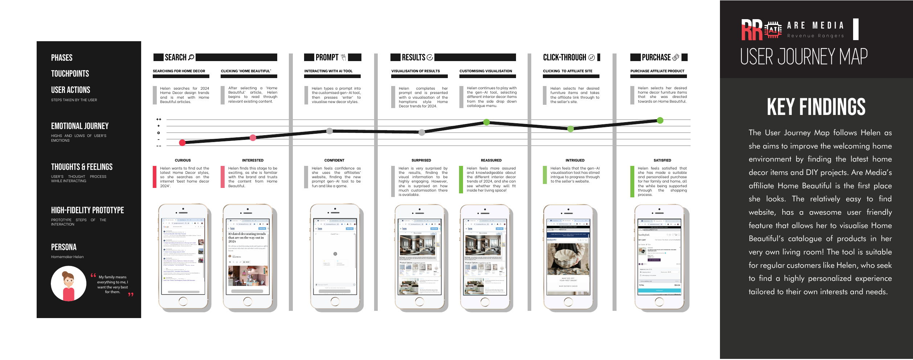
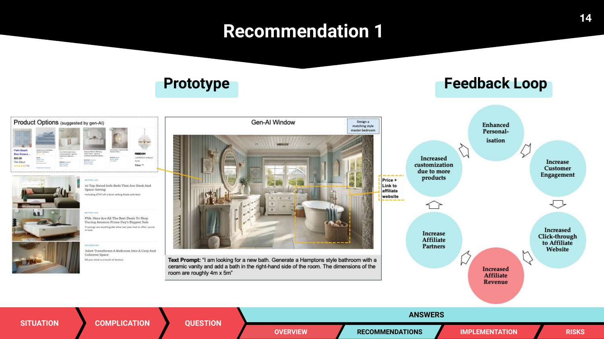
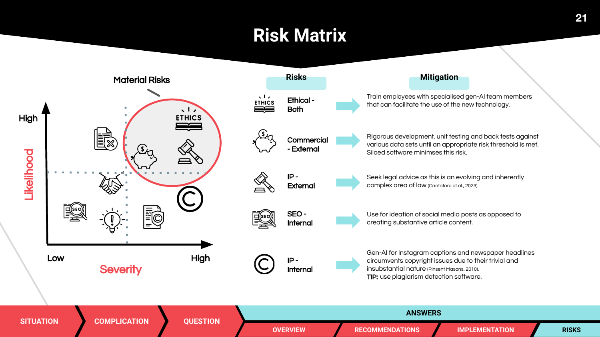

传统媒体需要新的收入增长路径
项目关注传统媒体广告与内容收入压力下，如何通过联盟营收连接内容、商品发现和购买转化，让内容平台从“被阅读”走向“辅助决策”。
Project 04 / 2024 / GenAI + 用户旅程 + 联盟营收
这是一个围绕澳大利亚营销公司 Are Media 的 GenAI 商业应用方案。项目从传统媒体收入向联盟营收转型的背景出发，基于用户旅程图设计 AI 视觉化原型、购买链路和风险矩阵。
Project Background
项目关注传统媒体广告与内容收入压力下，如何通过联盟营收连接内容、商品发现和购买转化，让内容平台从“被阅读”走向“辅助决策”。
家居内容用户往往先寻找风格灵感，再逐步比较商品。AI 视觉化工具可以把用户的模糊偏好转成可见方案，并将其连接到商品购买链接。
User Journey

Solution Design
用户通过自然语言描述空间风格、房间类型和偏好，降低从灵感到方案表达的门槛。
将文章内容和用户偏好转为可视化家居方案，让用户更容易判断风格是否适合自己。
把视觉结果中的家具与装饰连接到相关商品，缩短从内容消费到商品决策的路径。
Project Deliverables


Responsible AI & Risk
| 风险类型 | 可能问题 | 产品应对 |
|---|---|---|
| 版权 / IP | 生成图像可能借鉴受版权保护的内容或品牌素材。 | 建立素材授权规则、生成结果审核和来源说明机制。 |
| 透明度 | 用户可能误以为 AI 生成内容是人工编辑或真实空间照片。 | 明确标注 AI 生成结果，并解释推荐逻辑和商业链接属性。 |
| 用户信任 | 不准确的视觉化或商品推荐可能降低平台可信度。 | 加入人工审核、高置信度展示和用户反馈入口。 |
| 品牌安全 | 生成内容可能与 Are Media 的编辑调性或合作品牌不一致。 | 建立品牌风格规范、禁用词和输出审核边界。 |
| 商业依赖 | 过度依赖 AI 推荐可能牺牲编辑独立性或用户体验。 | 保持内容价值优先，将商业推荐作为辅助路径而非唯一目标。 |
| 实施成本 | 模型调用、审核和维护会带来持续成本。 | 从低保真原型、小范围测试和成本估算开始迭代。 |
Product Thinking